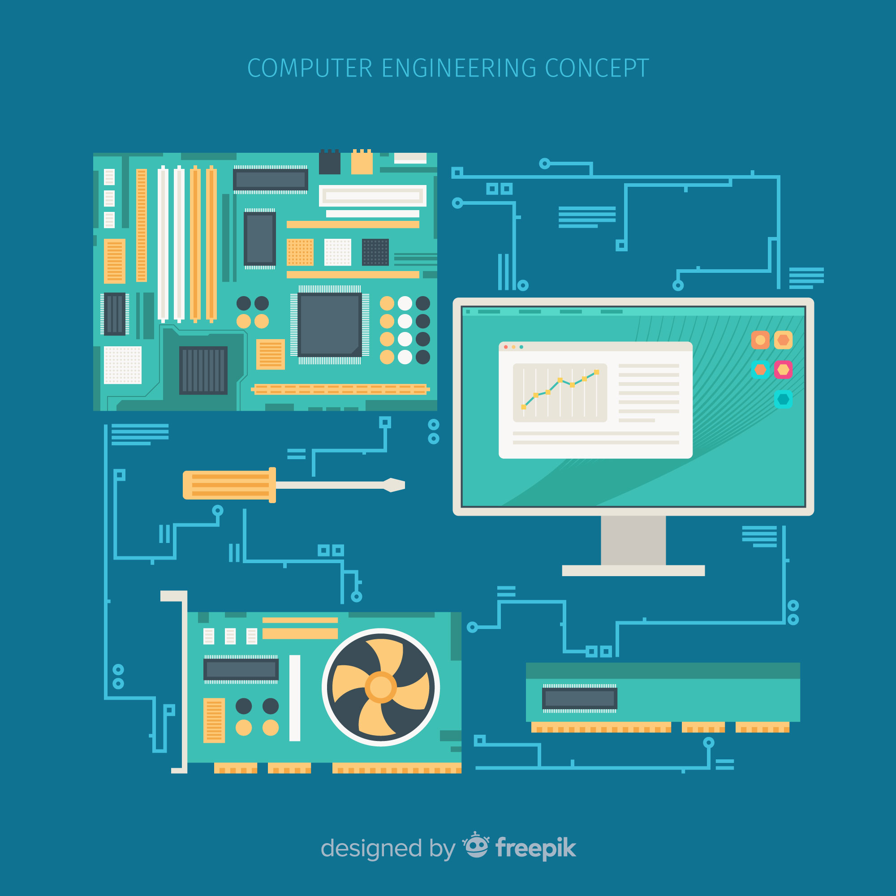

Számítógép architektúrák GEIAL301B
Ismerd meg a számítógépek belső működését és építését a számítógép architektúra tárgy keretein belül,
hogy mélyebb megértést szerezve készségeidet és tudásodat gazdagítsd a számítógépes rendszerek terén
Tematika
- Számítási modellek
- A felhasználó szempontjai
- Felhasználói felületek
- A processzor
- Teljesítmény fokozás
- A sínek
- A memória
- Eszközök
- Korszerű architektúrák